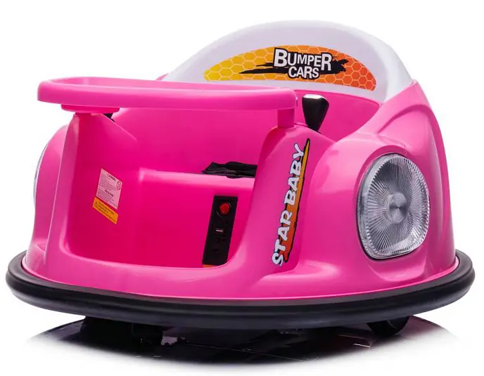

12V Ride-On Bumper Cars – Carzone’s Fun on Wheels
Kids have endless energy, and parents know it all too well. If you’ve ever seen a child running in circles at the park, you know they’re basically powered by invisible batteries. But what if they had actual batteries to run on? That’s where 12V ride-on bumper cars from Carzone come into the picture. These little cars are not just toys; they’re rolling excitement for kids, and they’re built to keep smiles on faces for hours.
So, what exactly are 12V ride-on bumper cars? In simple terms, they are battery-powered mini cars that allow children to drive, bump, and spin around safely. Think of them as the ultimate ride that turns any living room, driveway, or backyard into a mini amusement park. Parents love them because they’re safe and sturdy, while kids love them because they get to be the boss of their own car.
Why Kids Love 12V Ride-On Bumper Cars
Children love control. Whether it’s choosing their favorite cartoon or deciding what snack they want, kids enjoy being in charge. A 12V ride-on bumper car hands them the steering wheel, literally. With the easy-to-use joystick or remote, kids can spin, bump, and cruise around like they’re in their own little world.
The best part is the fun doesn’t get boring quickly. These cars have a full 360-degree spin feature, which means kids can spin in circles until they laugh so hard they can’t breathe. It’s the kind of play that keeps them active without even realizing they’re burning energy. And let’s be honest, for parents, that’s a win.
Colors and flashing lights also add to the fun. Carzone bumper cars come with bright designs and LED lighting that make the ride feel like a carnival. Whether it’s indoors with dimmed lights or outdoors in the evening, the glow makes the whole experience even more magical.
Safety First, Fun Second
Parents might raise an eyebrow at the word “bumper,” but Carzone has built these cars with safety as the number one priority. The body is made from strong materials that can handle bumps without falling apart. The rounded edges ensure no sharp corners can hurt little drivers.
The seat comes with a safety belt to keep the child secure while they’re busy spinning and bumping. The wheels are designed to stay steady on flat ground, whether inside the house or outside on the driveway. And with parental remote controls included, adults can always take charge if the ride gets a little too wild.
Charging is also simple and safe. The 12V battery is long-lasting and designed to keep rides going for a good amount of time before needing a recharge. That means fewer interruptions and more giggles.
Built to Last, Even With Rough Play
Let’s be real, kids are not gentle with toys. They throw them, bump them, and sometimes test their strength in ways adults never imagined. That’s why durability is a big deal when it comes to ride-on toys.
Carzone’s 12V ride-on bumper cars are made with solid frames and strong materials that can handle rough use. Even after many spins and bumps, the car keeps going. The design focuses on longevity, so parents don’t have to worry about it breaking down after a few uses.
This durability also means the toy can be shared between siblings without fights about “breaking my car.” Whether it’s used daily indoors or occasionally outdoors, it’s built to handle the fun.
Why Parents Approve These Bumper Cars
Parents aren’t just buyers; they’re the ultimate testers. If a toy keeps their child happy, safe, and busy, it passes the test. That’s exactly why these bumper cars get so much love from parents.
The remote control feature is often praised because it gives parents control when needed. If a child is too young to handle the car on their own, adults can steer it safely. This makes it suitable for both toddlers and slightly older kids.
Another reason parents like them is that they don’t take up as much space as bigger ride-on cars. You don’t need a massive backyard. Even an open living room or driveway can turn into a mini track. And let’s be honest, parents love anything that keeps kids entertained without the need for expensive trips.
Indoor and Outdoor Play Options
One of the coolest parts about these bumper cars is their flexibility. They’re not just for outdoor fun. Kids can use them inside the house, on smooth floors, without causing damage. The rubber wheels are gentle enough to avoid scratches, which means your living room doesn’t turn into a battlefield.
Outdoors, the ride feels different but equally fun. A driveway, garage, or smooth backyard surface works perfectly. Because of the strong battery and design, kids can ride on different flat surfaces without issues. This indoor-outdoor flexibility is what makes these cars a favorite for families living in apartments as well as houses with big yards.
The Perfect Gift That Keeps Giving
If you’ve ever struggled with buying a birthday or holiday gift, you know the panic of choosing something that won’t be tossed aside after a week. A 12V ride-on bumper car doesn’t fall into that category. It’s the kind of gift that keeps children entertained for months, maybe even years.
The excitement of driving their own car is not something kids outgrow quickly. Even siblings or friends visiting the house will want a turn. That means this one toy can create countless moments of laughter and fun memories for the entire family.
Parents also find it a practical investment because of its durability and the fact that kids can use it for a wide age range. Unlike smaller toys that are forgotten in a toy box, this one earns its place as a family favorite.
Features That Make Carzone’s Models Special
Carzone takes pride in designing bumper cars that stand out from regular toys. The bright LED lights, easy controls, smooth design, and safe materials make them more than just an average ride-on toy.
Each car has a strong 12V battery that lasts long enough for extended playtime. The controls are designed so kids can learn quickly, and parents don’t have to constantly explain how to use it. The lightweight design makes it easy to move around, while the solid structure ensures it doesn’t feel flimsy.
On top of that, the look of the car itself feels premium. With fun colors and sleek styling, it’s not just a toy; it looks like a mini ride from a carnival right in your home.
The Carzone Promise
Carzone isn’t just selling toys; they’re creating experiences. The company focuses on making ride-on toys that combine fun, safety, and quality. Parents trust them because their products are reliable, and kids love them because they’re pure entertainment.
Buying from Carzone also means knowing you’re getting something designed specifically with children in mind. Every little detail, from the seat belt to the LED lights, is carefully thought out. The company’s reputation comes from delivering toys that parents feel confident in and kids adore.
Do you know about Electric ATV 4 Wheelers?
Picture this: a vehicle that lets kids, teens, or even grown-ups ride across dirt, grass, and small hills, powered entirely by battery. Electric ATV 4 wheelers are exactly that. They bring power, safety, and fun together. At Carzone, the selection of these electric ATVs shows how people can get off-road thrills without dealing with gas engines, fumes, or too much maintenance.
Final Thoughts on 12V Ride-On Bumper Cars
At the end of the day, toys are more than just objects. They’re tools for joy, imagination, and memories. A 12V ride-on bumper car from Carzone is one of those rare toys that checks all the boxes. It’s fun, safe, durable, and exciting enough to keep kids coming back again and again.
Children get to laugh, spin, and ride like little drivers. Parents get peace of mind with safety features and the remote control option. Together, it becomes more than just playtime; it’s quality family time.
So if you’re looking for a toy that brings happiness into your home and keeps kids active in the best way, Carzone’s 12V ride-on bumper cars are worth every penny. They’re not just cars; they’re joy on wheels.